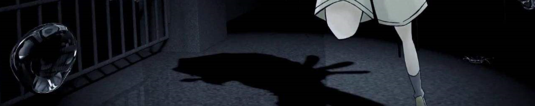

简介
《名侦探柯南》是根据日本漫画家青山刚昌创作的漫画《名侦探柯南》改编的同名推理动画作品系列。其中电视动画由V1Studio制作，于1996年1月8日开始在日本读卖电视台播放，至今仍在播出。
高中生侦探工藤新一与毛利兰在游乐园游玩时发现两个行动诡异的黑衣男子，便跟踪他们，不料被灌下一种叫“APTX4869”的神秘毒药，然而因为药物副作用，新一的身体竟回到孩童状态。为不使周围的人受到牵连，他化名为“江户川柯南”，寄住在毛利兰家中，用阿笠博士发明的手表型麻醉枪让毛利小五郎睡着，接着用蝴蝶结变声器模仿他的声音来进行推理，解决了许多案件，并一直寻找着黑衣组织的人的下落，希望有朝一日将其绳之以法，并变回原来的样子。
动漫与原作漫画的区别
- 动画中各个案件的顺序与漫画原作中的顺序有很大的区别。 这对于只看动漫的大多数柯南迷没有什么关系。
- 部分情节的添加、删减与变更，并增加了动画原创故事。 动画原创故事就是漫画中没有的，这其实是很多的。
- 部分人物在动画中的登场时间也有所改变，如少年侦探团的成员们在动画第1集便登场，铃木园子的登场时间也被提早。 这造成了矛盾：第1集中光彦等人见过新一，到了第192集（日文版）中却说不认识新一。
- 动画最初期因为“低龄化”的定位，制作组在动画中将黑社会性质的黑衣组织进行了屏蔽。 这个造成了比较大的影响，具体的请自行百度，这里给出其中一点：明美之死在动画中被改编，所以漫画中相关的灰原登场的情节也被延后（明美在漫画第2卷登场，灰原则在漫画第18卷才登场），作者青山刚昌便创作出了服部平次这一角色，来替代无法登场的灰原作为柯南的对手。考虑到剧情关联性的因素，动画中后期关于黑衣组织的情节也不再避讳。
- 更多区别详见知乎精选.
